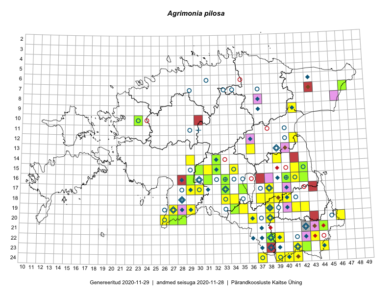

Agrimonia pilosa
Uuendatud: 2016-12-01
Kaardile koondatud taksonid: Agrimonia pilosa Ledeb.

Kaart põhineb 82 kirjel, neist vaatlusi 78 ja eksemplare 4.
Kuvatud viited 20 esimesele andmebaasikirjele, ülejäänud PlutoFis
- Malle Leht: 2015-07-09: : ala
- Peedu Saar, Liina Oja: 2015-06-11: 16-29: GPS punkt
- Peedu Saar, Eerik Leibak: 2015-07-30: 15-42: GPS punkt
- Peedu Saar, Eerik Leibak: 2015-07-30: 15-42: ala
- Peedu Saar, Liina Oja: 2015-06-11: 16-29: ala
- Malle Leht: 2015-07-25: 18-40: ala
- Malle Leht: 2015-07-25: 18-40: ala
- Peedu Saar: 2015-10-01: 22-38: ala
- Peedu Saar: 2015-10-01: 22-38: GPS punkt
- Peedu Saar: 2015-10-01: 22-38: GPS punkt
- Thea Kull, Eerik Leibak: 2015-07-21: 07-47: ala
- Eeva-Maria Jeletsky, Tarmo Niitla: 2015-07-17: 22-38: GPS punkt
- Eeva-Maria Jeletsky, Tarmo Niitla: 2015-07-17: 22-38: GPS punkt
- Eeva-Maria Jeletsky, Tarmo Niitla: 2015-07-17: 22-38: GPS punkt
- Eeva-Maria Jeletsky, Tarmo Niitla: 2015-07-17: 22-38: ala
- Maria Abakumova, Helle Mäemets: 2015-07-01: 14-32: ala
- Eeva-Maria Jeletsky, Tarmo Niitla: 2015-07-16: 24-37: GPS punkt
- Maria Abakumova, Helle Mäemets: 2015-07-30: 15-34: ala
- Eeva-Maria Jeletsky, Tarmo Niitla: 2015-07-16: 24-37: ala
- Eeva-Maria Jeletsky, Tarmo Niitla: 2015-08-12: 19-38: GPS punkt